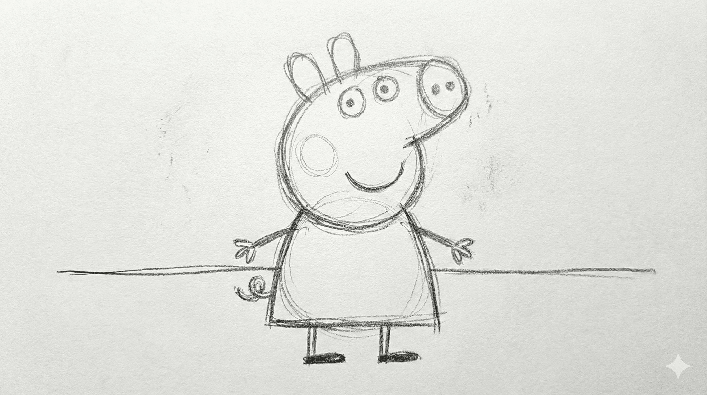
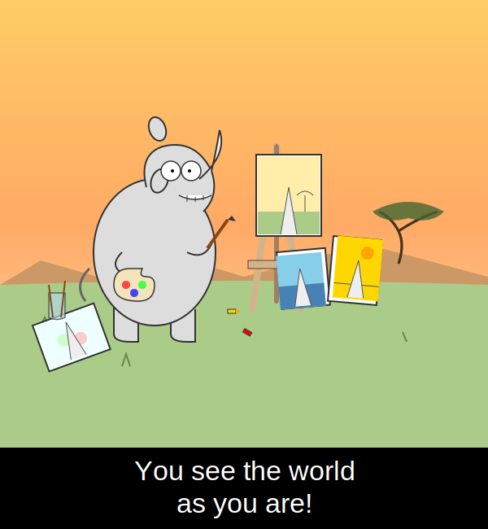
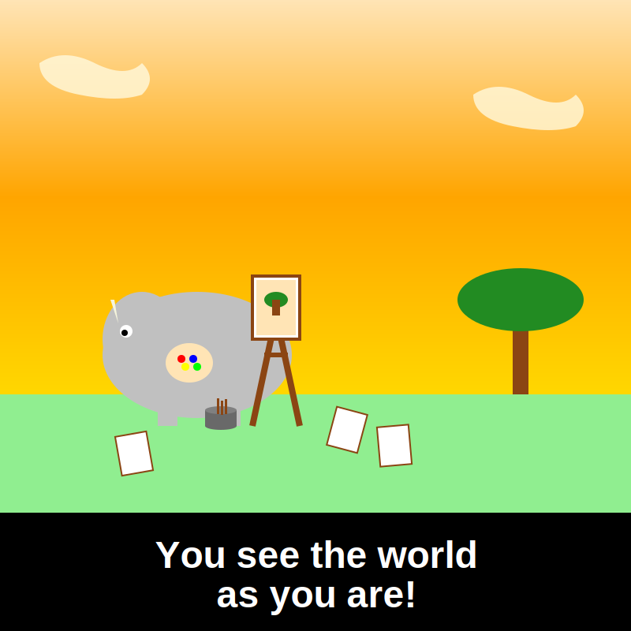
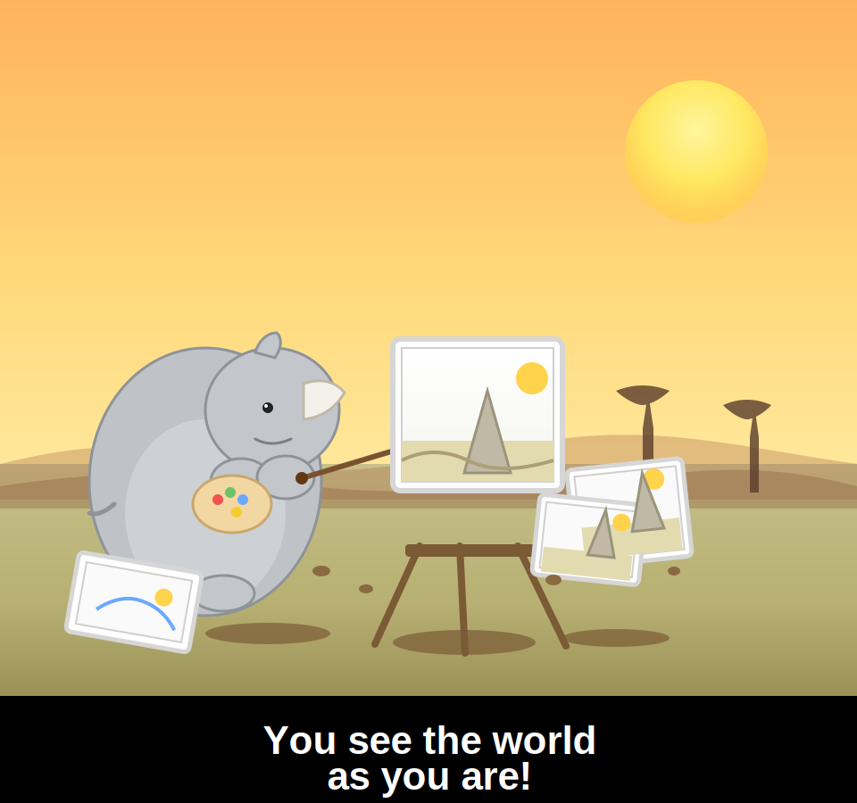

When Vision Meets Code
Unlike Language, which is free-form, flexible, and descriptive, Code is precise, structured, and executable. It doesn't merely describe what should happen; it makes it happen. And while code has long been treated as a specialized modality, its role has become central to programming and tool use, especially in the age of agents. Vision, by contrast, is how humans perceive the physical world directly and intuitively — raw, unstructured, and immediate.

Something interesting is happening at the frontier. The Gemini-3
uses SVG animation to highlight its strong multimodal capability.
Kimi K2.5 emphasizes visual agentic intelligence such as
reconstructing a website from visual demonstrations. Together, these point to a growing intuition:
code and vision are no longer isolated and they are finding each other.
As a computer vision and agent researcher, I have become deeply fascinated by this intersection.
I want to share some of my thoughts and recent works on what happens when vision meets code:
how code can offer a new lens for images, video, 3D, and world models.
Code as Visual Representation
AI models typically perceive images the way cameras capture them: as a grid of millions of pixels, each storing an exact RGB value. It works but it's not really how humans see. When we glance at a scene, we don't mentally log every pixel. We notice structure: where things are, how many there are, what shapes they form.
Think of how an artist starts with a rough sketch before adding color and detail. That sketch is
sparse, symbolic, structural; is often enough to convey meaning. This gave us an idea: what if,
instead of pixels, we represent images via code representation?
Scalable Vector Graphics (SVG) being a choice, it is the format behind most crisp icon, logo on the web. Rather than storing colors pixel-by-pixel, it describes shapes: draw a blue rectangle here, a circle there, a curved path connecting them. It's compact, human-readable, and notably executable.
Here's a quick example with Peppa Pig. The image below is rendered entirely from SVG code, yet we recognize her easily.
| Input Image | Human’s sketch | SVG Code | Rendered Image |
|---|---|---|---|

|
 |
<svg viewBox="0 0 320 190" xmlns="http://www.w3.org/2000/svg"> <rect x="0" y="0" width="320" height="190" fill="#7ec0ee"/> <rect x="0" y="120" width="320" height="70" fill="#72c45a"/> ... </svg> |

|
This is the core idea behind VCode: if a model truly understands an image, it should be able to reconstruct it in SVG; not a pixel-perfect copy, but a symbolic one. The objects, their positions, their relationships, their hierarchy, all expressed as clean, human-readable vector primitives.
How to evaluate whether the code actually captured what matters, symbolically? This motivate us to devise a new evaluation prototype named CodeVQA: convert an image to SVG, render it back, then ask a policy model to answer questions using only the rendered version. If the answers match those from the original image, the SVG preserved meaning not just appearance.

Here is a more telling example. Among the models, Gemini-3-Pro best preserves the key detail — the rhino horn which is precisely what makes the image funny. Using CodeVQA, we can measure how well foundation models understand and reason about visual-naive coding ability. If you are curious, check out the website for more details.
| orig. image | by Gemini-3-pro🏅 | by Claude-opus-4 | by GPT-5 |
|---|---|---|---|

|
 |  |  |
Video Generation via Programming
If code can represent a static image, can it represent a dynamic video? Intutively, time is something code handles naturally through sequences, loops, and state transitions.
Video generation models are remarkably good at the natural world, simulating physical laws like how light scatters, fabric folds, or smoke drifts. But there is another world entirely: explainer videos, data visualizations, motion graphics, professional animations.
Take educational videos as a representative example. The building blocks are text, equations, shapes, and transitions, where “approximately correct” is unacceptable. As shown on the left, Veo3 struggles with text fidelity and smooth transitions. In contrast, code-based animation gives full control over every element (characters, lines, points) making precision not just possible, but guaranteed.
| Pixel Generation | Code Animation |
|---|---|

|

|
This is the motivation behind Code2Video. Focusing on educational video, we reframe video creation as code animation — writing executable Python scripts using the Manim animation library. Every element is precisely specified: formula layout, text, animation and transition ordering. Every real content lives in the code.
How to debug based on visual outcome? When code breaks in an editor like VSCode, you get a clear signal (a stack trace, a line number, telling you exactly what went wrong). But debugging a visual animation is much harder for two reasons: (i) errors don’t crash the program, they just look improper, a misplaced coordinate or a timing mistake renders silently with no feedback; and (ii) it’s difficult to even describe what’s wrong and how to adjust such as should the object move left or right? How far? How do you put that into words?
To solve this, we introduce anchor points as visual prompts: labeled markers overlaid directly on the animation, with each marker's position tracked in the code. When something looks off, the Critic agent can reference these markers to describe the problem clearly. For example, “move the cat from D2 to B2” then jump straight to the relevant line in the code to fix it.
What make a good educational video? Evaluating educational video quality is not just about whether the video looks good it's about whether it actually teaches. We introduce TeachQuiz, where a student model watches a generated video and answers a quiz about the target concept. However, simply measuring quiz accuracy is not enough: top-performing models can often answer correctly without watching the video at all, relying on knowledge they already have. To isolate what the video truly taught, we first apply an unlearning step to let the model forget this part knowledge, then re-expose it to the video. The final score measures the improvement, capturing only the knowledge gained from the video itself, not from base model.
👦 Fun fact: We conducted a human study by showing the generated videos to middle school students and received positive feedback. We believe AI can play a promising important role in education.
Real-world Impacts
Lastly, I would like to express our sincere gratitude to 3Blue1Brown, whose work inspired the core idea behind this project and has made tremendous contributions to the field of educational animation. We also draw inspiration from Remotion, an open-source framework for building programmatic video with React. Here's a glimpse of what they produce:
| 3Blue1Brown | Remotion |
|---|---|

“How might LLMs store facts”, made by 3B1B team. |

Instruction: “This video was made with code” |
Coder as World Model
Above we explored how code can represent visual content. But code can do something even more powerful: it can simulate environments. While world models are commonly known through video generation, we want to offer a different perspective that code itself acts as the engine.
3D: Blender Code as Engine
3D worlds are far more complex than 2D where objects have physics, depth, collision, and interaction. Blender provides a powerful programmable engine to model all of this. Built on top of it, VIGA is a multimodal agent that reconstructs any input image as an editable 3D scene, where every element, from object placement to lighting to physical interactions, is controllable through blender code. Moreover, VIGA can simulate what happens next: throw a ball to knock over objects, simulate an earthquake, or break a mirror, all driven by generated Blender code.
| Input | Reconstruct the scene | Throw a ball to knock over all the objects |
|---|---|---|

|
|
|
GUI: HTML Code as Engine
Another dimension is the digital world. Autonomous GUI agents that navigate apps, click buttons, and fill forms need to predict what happens before they act just as humans mentally simulate the outcome of an action before committing to it. This predictive capability is a GUI world model: given the current screen and a proposed action, simulate what the next screen will look like. One natural solution is to predict the next state in text[1] or visual[2][3] but text loses rich visual information, while visual diffusion models struggle with rendering accurate text. NeuralOS and ViMo are interesting works that pioneers this direction.
A strong motivation is that GUIs (such as website) are usually defined by code engine (such as HTML). Next-state prediction as renderable code generation is thus a natural fit, Code2World trains a vision-language coder to synthesize the next screen as HTML, conditioned on the current screenshot and the proposed action, then renders it directly in a browser.

How to use a Code World Model? A good world model should ultimately empower the agent that uses it. Rather than evaluating visual quality alone, we focus on whether the predicted next state is accurate enough to guide action selection tested in GUI environments. By acting as a critic that previews the outcome of each candidate action, the world model helps the agent pick the right one, improving task success rate.
Real-world Impacts
Google's Gemini OS is a prototype that simulates a generative operating system where every screen is generated in real time by programming. Each click triggers the model to build the next UI on the fly, creating an infinite, adaptive computer experience.
Looking forward
Future coders should receive both text instructions and visual (even video) demonstrations simultaneously so that writing code that reproduces visual effects by bridging language and vision through programs[1][2].
Complex visual output is inherently difficult to evaluate. Defining a reliable outcome metric is critical — especially for reinforcement learning[1]: how do we design a proper reward signal, such as a rubric-based reward, that guides the model toward producing correct visual effects?
For human, reading code is inherently a visual task. How to enable model that can see code[1][2] not just parse it as text — gains access to layout cues, indentation, and visual highlights that carry real semantic weight.
I am grateful to all collaborators who contributed to the works. Thank the broader research and open-source community whose shared tools, datasets, and ideas.
References
- “VCode: a Multimodal Coding Benchmark with SVG as Symbolic Visual Representation.” [website]
- “Code2Video: A Code-centric Paradigm for Educational Video Generation.” [website]
- “Code2World: A GUI World Model via Renderable Code Generation.” [website]
- “A Vision Check-up for Language Models.” [website]
- “StarVector: Generating Scalable Vector Graphics Code From Images And Text.” [website]
- “Rendering-Aware Reinforcement Learning for Vector Graphics Generation.” [paper]
- “Symbolic Graphics Programming with Large Language Models” [website]
- “TheoremExplainAgent: Towards Video-based Multimodal Explanations for LLM Theorem Understanding” [website]
- “MeshCoder: LLM-Powered Structured Mesh Code Generation from Point Clouds” [website]
- “VIGA: Vision-as-Inverse-Graphics Agent via Interleaved Multimodal Reasoning.” [website]
- “Is Your LLM Secretly a World Model of the Internet? Model-Based Planning for Web Agents.” [paper]
- “NeuralOS: Towards Simulating Operating Systems via Neural Generative Models” [website]
- “ViMo: A Generative Visual GUI World Model for App Agent.” [website]
- “Design2Code: Benchmarking Multimodal Code Generation for Automated Front-End Engineering.” [paper]
- “JanusCoder: Towards a Foundational Visual-Programmatic Interface for Code Intelligence.” [paper]
- “CodeOCR: On the Effectiveness of Vision Language Models in Code Understanding.” [paper]
- “LongCodeOCR.” [paper]